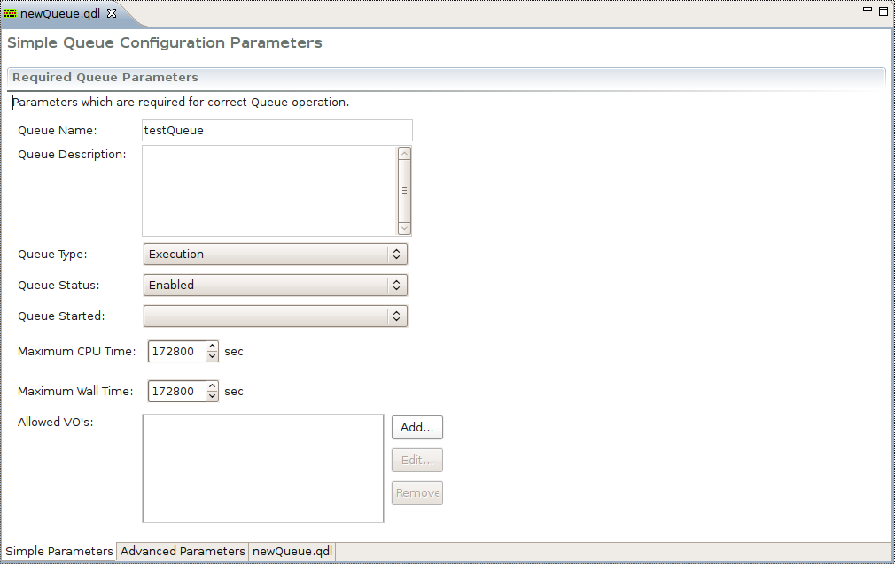

After you have created a Queue Configuration Description file using the New Queue Configuration wizard, you may decide to change some of the queue parameters or even provide additional information. Since editing the Queue Configuration Description file manually is a time consuming and error-prone process requiring knowledge of the Queue Description Language (QDL), a multi-page form editor is provided in g-Eclipse to ease this task. The Queue Configration Description editor is the default editor and viewer for QDL files in the g-Eclipse framework. QDL files have the *.qdl extension.
Once you finished the process of creating a new Queue Configuration Description with the New Queue Configuration wizard, the QDL editor opens in the center workbench view and loads automatically the newly created file.
The QDL editor is a multi-page editor consisting of the following three pages/tabs: